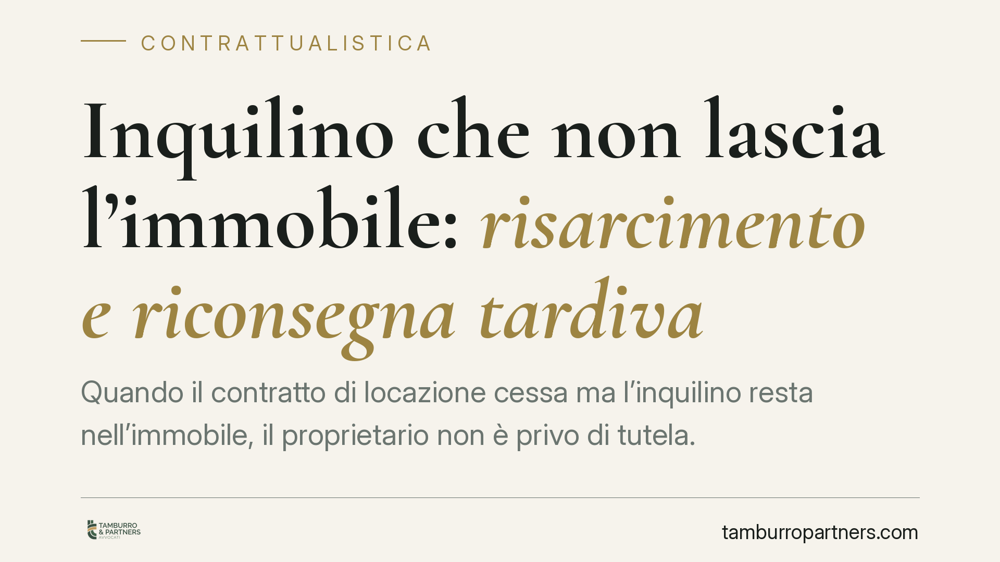

Inquilino che non lascia l'immobile: risarcimento e riconsegna tardiva
Quando il contratto di locazione cessa ma l'inquilino resta nell'immobile, il proprietario non è privo di tutela. Il Codice Civile prevede un obbligo di riconsegna e, in caso di ritardo, un'indennità automatica oltre al risarcimento dell'eventuale danno ulteriore. Vediamo quali sono i presupposti, cosa spetta al locatore e quali passi conviene compiere per non perdere efficacia probatoria.

Il quadro dei fatti
La fine di una locazione non coincide sempre con la restituzione delle chiavi. Capita che l'inquilino, scaduto il contratto o intervenuta la risoluzione, continui a occupare l'immobile. Per il proprietario si apre allora una fase delicata: da un lato non può rientrare in possesso da solo, dall'altro sopporta un pregiudizio economico crescente.
La legge distingue con precisione tra l'obbligo di riconsegnare il bene, quello di custodirlo fino alla restituzione e le conseguenze del ritardo. Sono tre profili collegati ma autonomi.
Inquadramento normativo
L'obbligo di restituzione è disciplinato dall'art. 1590 c.c.: il conduttore deve riconsegnare l'immobile nello stato in cui l'ha ricevuto, salvo il normale deterioramento derivante dall'uso. In caso di danni, l'art. 1588 c.c. pone a suo carico la responsabilità per il perimento o il deterioramento della cosa, salvo che provi che l'evento è avvenuto senza sua colpa.
La disposizione centrale per il ritardo è l'art. 1591 c.c.: il conduttore in mora nella restituzione deve dare al locatore il corrispettivo convenuto fino alla riconsegna, salvo l'obbligo di risarcire il maggior danno. In pratica, chi resta oltre il termine continua a pagare almeno quanto pagava prima (la cosiddetta indennità di occupazione), e può dover risarcire di più se il proprietario dimostra un pregiudizio superiore.
La Cassazione ha chiarito che questa indennità ha natura risarcitoria e non richiede la prova di un danno specifico: il canone rappresenta il parametro minimo dovuto per il solo fatto del ritardo. Il "maggior danno", invece, va provato: ad esempio la perdita di una vendita già programmata o di una nuova locazione a condizioni più vantaggiose.
Implicazioni pratiche
Per il proprietario significa che, anche senza sfratto ancora eseguito, il periodo di occupazione senza titolo non resta indennizzato. L'importo minimo è ancorato all'ultimo canone; per ottenere di più occorre documentare l'occasione persa o il costo aggiuntivo sostenuto.
Per l'inquilino, il messaggio è altrettanto chiaro: trattenere l'immobile oltre la scadenza non è una zona grigia gratuita. Il ritardo genera un debito che matura giorno per giorno e che si somma agli eventuali danni materiali riscontrati al momento della riconsegna.
Un punto spesso trascurato riguarda la prova dello stato dell'immobile. Senza un verbale di consegna iniziale, contestare i danni al termine diventa difficile: manca il termine di paragone. Il confronto tra lo stato di ingresso e quello di uscita è ciò che regge la richiesta risarcitoria ex art. 1590 c.c.
Cosa fare in concreto
- Documentate lo stato dei luoghi. Conservate il verbale di consegna iniziale e, alla riconsegna, redigete un verbale con foto datate e, se possibile, alla presenza dell'inquilino.
- Inviate una diffida scritta a mezzo raccomandata o PEC, intimando la restituzione e riservandovi l'indennità ex art. 1591 c.c. e il risarcimento del maggior danno.
- Quantificate l'indennità a partire dall'ultimo canone, calcolandola per l'intero periodo di occupazione senza titolo fino all'effettiva riconsegna.
- Raccogliete la prova del maggior danno, se esiste: proposte di vendita o locazione sfumate, corrispondenza con potenziali acquirenti o conduttori, perizie sui costi di ripristino.
- Attivate la procedura di rilascio nelle sedi competenti se l'occupazione prosegue: l'indennità non sostituisce lo strumento per rientrare in possesso.
Ogni situazione ha specificità che incidono sulla strategia: la natura del titolo cessato, la presenza di canoni arretrati, la tipologia contrattuale. Consigliamo di valutare la posizione prima di inviare comunicazioni formali, così da impostare correttamente la richiesta e non pregiudicare le domande successive.
Un'ultima annotazione
Il tempo, in queste vicende, non è neutro: quanto più solida è la documentazione raccolta fin dall'inizio del rapporto, tanto più agevole sarà far valere le proprie ragioni. La cura documentale iniziale vale spesso quanto l'azione giudiziaria finale.
---
*Contributo informativo a cura di Tamburro & Partners - Avv. Giuseppe Tamburro. Non costituisce parere legale.*
Ogni contratto ha il suo equilibrio.
Se vuoi una revisione delle clausole o una redazione su misura, scrivi allo studio. Ti rispondiamo entro un giorno lavorativo.